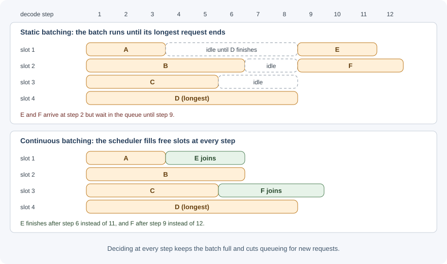

Serving Open Models¶
A hosted model API hides everything between "send a prompt" and "receive tokens". When you run open-weight models yourself, that hidden part becomes yours: a serving engine that loads the weights onto a GPU, schedules many requests at once, manages the attention state of every conversation, and exposes an HTTP API your backend can call. This lesson explains how modern engines (vLLM, SGLang, the llama.cpp server, Ollama, and the now-archived Text Generation Inference) work inside: the KV cache, paged attention, continuous batching, and prefix caching.
It then covers the OpenAI-compatible endpoints that let TaskFlow's backend switch between a hosted provider and a self-hosted model by changing a base URL, and how to run an engine on Kubernetes with GPU nodes, long startup probes, a model cache, and queue-based autoscaling. Latency tuning, cost accounting, and GPU sizing get their own lessons in this subject.
Why it matters¶
A naive server that calls a model's generate function once per request
leaves most of an expensive GPU idle. Generating text is a loop: one
forward pass per output token, and each pass for a single sequence reads all
the model weights from GPU memory to produce one token. The GPU's arithmetic
units mostly wait for memory. Processing many sequences in the same pass
reuses each weight read for all of them, which is why a good engine serves
many times more users on the same card than a request-at-a-time loop.
The constraint that decides how many sequences fit is GPU memory, and most of it is not the weights but the KV cache: the attention keys and values of every token in every active conversation. Engines differ mainly in how well they pack that cache, how quickly they admit new requests into a running batch, and how much of a shared prompt they can reuse. Choosing an engine, and setting its memory and concurrency limits, decides throughput, time to first token, and cost per request far more than small model differences do.
Operationally, a model server is a stateful, slow-starting, GPU-bound service. It takes minutes to start, it fails differently from a web server (out of memory, queueing, preemption), and its HTTP API is easy to expose by accident. Knowing those properties is what lets you deploy it safely.
Real-world usage¶
- vLLM and PagedAttention. The paper Efficient Memory Management for Large Language Model Serving with PagedAttention (Kwon and colleagues, SOSP 2023) measured that in earlier systems "only 20.4% - 38.2% of the KV cache memory is used to store the actual token states", and that managing the cache in pages lets vLLM improve throughput "by 2-4x with the same level of latency".
- Orca and iteration-level scheduling. The OSDI 2022 paper Orca: A Distributed Serving System for Transformer-Based Generative Models introduced scheduling at the granularity of one decoding iteration, so finished sequences leave the batch and new ones join without waiting for the whole batch. Engines now call this continuous batching.
- SGLang and RadixAttention. The paper SGLang: Efficient Execution of Structured Language Model Programs describes RadixAttention, which keeps a tree of cached prefixes for reuse across requests, and reports "up to 6.4x higher throughput" on workloads such as agents and multi-turn chat.
- Text Generation Inference (TGI). The TGI repository README states that "text-generation-inference is now in maintenance mode" and recommends vLLM, SGLang, and local engines such as llama.cpp or MLX going forward. As of November 2026 the repository is archived (read-only), and its last release is v3.3.7 from December 2025.
- vLLM on Kubernetes. The vLLM guide
Using Kubernetes shows a
GPU Deployment with a Hugging Face token Secret, a model cache volume, a
shared-memory volume, and
/healthprobes, and lists higher-level projects that build on it, such as KServe, llm-d, KubeAI, NVIDIA Dynamo, and the vLLM production stack.
Popular tools and providers: vLLM, SGLang, the llama.cpp server
(llama-server), Ollama, and LM Studio for engines; KServe, llm-d, KubeAI,
and the vLLM production stack for Kubernetes; KEDA for queue-based
autoscaling; Hugging Face Hub for model weights; managed endpoints from
cloud providers when you want open models without operating GPUs.
How it works¶
Prefill, decode, and the scheduler¶
Every request passes through two phases with very different costs:
- Prefill. The engine runs the whole prompt through the model in one large, parallel pass, computing attention keys and values for every prompt token and producing the first output token. Prefill is compute-bound: a 4,000-token prompt is a lot of matrix arithmetic, done efficiently.
- Decode. The engine then generates one token per step. Each step processes only the newest token per sequence, but it must read the weights and that sequence's cached keys and values. Decode is memory-bandwidth-bound: the GPU spends most of the step moving bytes.
A scheduler loop runs continuously: it picks which waiting requests to admit, which running sequences take a decode step, how much prefill work fits into the same step, and which requests to pause when memory runs out. Its limits (maximum running sequences, maximum tokens per step, memory reserved for the cache) are the main knobs you set when deploying.
The KV cache¶
Attention lets each new token look at every earlier token. Recomputing keys and values for the whole history at each step would be wasteful, so the engine stores them: two vectors (key and value) per layer, per key-value head, per token. That store is the KV cache, and it grows with every token of every active sequence:
KV bytes per token = 2 (K and V) x layers x kv_heads x head_dim x bytes per value
An 8-billion-parameter model shape: 32 layers, 8 KV heads, head_dim 128, 16-bit values
2 x 32 x 8 x 128 x 2 bytes = 131,072 bytes = 128 KiB per token
one 8,192-token conversation = 1 GiB of KV cache
weights: about 8 billion x 2 bytes = about 16 GB
Keeping about 10% of GPU memory back for the runtime:
24 GB GPU: 21.6 GB - 16 GB weights - activations -> roughly 4-5 GB of cache
-> about 4 conversations at full 8K context
80 GB GPU: 72 GB - 16 GB - activations -> roughly 55 GB of cache
-> about 55 conversations at full 8K context
Two consequences follow. The number of users one GPU can serve at once is set mostly by cache space, not by arithmetic. And context length is expensive: allowing 32K-token conversations instead of 8K cuts the number of concurrent full-length conversations by four. The full sizing method, including quantized weights and an FP8 cache, is in GPU capacity and scaling.
Paged attention¶
Early servers reserved one contiguous slab of cache per request, sized for the maximum possible output. A request that might produce 2,048 tokens but stops after 200 held 90% of its slab empty, and gaps between slabs could not be used by anyone.
![Diagram: two panels compare KV cache allocation; in the contiguous panel, three requests each reserve a slab sized for their maximum length, so most of each slab is reserved but unused and a fourth request is rejected because no slab-sized gap remains; in the paged panel, the same GPU memory is divided into fixed-size blocks, each request has a block table that maps its logical blocks to physical blocks anywhere in memory, blocks are allocated only as tokens arrive, two requests that share a system prompt point to the same physical prefix blocks, and the freed space admits the fourth request; paged allocation wastes at most part of one block per sequence.](../paged-attention-blocks.svg)
PagedAttention borrows the idea of virtual memory. The cache is split into small fixed-size blocks (the paper uses 16 tokens per block by default). Each sequence has a block table mapping its logical blocks to physical blocks anywhere in GPU memory, and the attention kernel follows the table. Blocks are allocated only as tokens are produced, so waste is limited to the unfilled part of each sequence's last block. Because blocks are referenced through tables, sequences can also share blocks: parallel samples of one prompt, or requests with the same system prompt, point to the same physical prefix blocks and copy a block only when they diverge.
Continuous batching¶
Static batching waits to collect a batch, runs it until the longest sequence finishes, and only then starts the next batch. Short answers sit finished while the long one completes, and new requests wait at the door.

Continuous batching (iteration-level scheduling) makes the decision at
every decode step. When a sequence finishes, its slot and cache blocks are
freed and a waiting request starts its prefill in the next step. Modern
engines combine this with chunked prefill: a long prompt is processed in
pieces mixed into decode steps, so one 30,000-token document does not freeze
every other user's stream while it is read. vLLM's --max-num-batched-tokens
caps the tokens processed per step, which trades prefill speed against the
smoothness of everyone's streaming.
When the cache fills up anyway, an engine must preempt: pause a running sequence and free its blocks, then recompute or reload them later. A few preemptions under bursts are normal; a steady stream means the server is admitting more concurrent work than its memory can hold.
Prefix caching¶
Many TaskFlow requests start with the same long text: the Assistant's system prompt and tool definitions, or a project's documents in a Q&A session. Prefix caching keeps the KV blocks of finished requests in a lookup keyed by a hash of the tokens they contain. A new request whose prompt begins with the same tokens reuses those blocks and skips their prefill, which cuts time to first token and frees compute for others.
vLLM's automatic prefix caching is enabled by default
(enable_prefix_caching defaults to true in vLLM 0.33), and its Prometheus
metrics report queries and hits. SGLang's RadixAttention organizes cached
prefixes as a radix tree and is designed around this reuse. The rule for
your prompts is the same as with hosted prompt caching: put stable content
first (instructions, tools, shared documents) and variable content last
(the user's message), and keep the stable part byte-for-byte identical.
The engines compared¶
| Engine | Best fit | Model format | Concurrency model | Notes (November 2026) |
|---|---|---|---|---|
| vLLM | Production GPU serving, many users | Hugging Face safetensors, many quantized formats | Continuous batching, paged KV cache, prefix caching | vllm serve; OpenAI-compatible server; very broad model and hardware support; v0.33 |
| SGLang | Production GPU serving, agent and multi-turn workloads with shared prefixes | Hugging Face safetensors and quantized formats | Continuous batching, RadixAttention prefix tree | sglang serve; OpenAI-compatible; its quickstart uses port 30000 |
| llama.cpp server | CPU, Apple silicon, single GPUs, edge devices | GGUF (often 4- to 8-bit) | Slots (-np) with continuous batching on by default |
llama-server; OpenAI- and Anthropic-compatible routes; binds to 127.0.0.1 by default |
| Ollama | Developer laptops, internal tools, quick prototypes | GGUF-based models from its library | One request per model at a time by default (OLLAMA_NUM_PARALLEL=1), queue of 512 |
OpenAI-compatible at http://localhost:11434/v1; easiest setup |
| TGI | Existing deployments only | Hugging Face safetensors | Continuous batching | In maintenance mode; repository archived; plan a migration |
The split is roughly: vLLM or SGLang when the model runs on data-center GPUs for many users; llama.cpp or Ollama when it runs on one machine, a laptop, or hardware without a large GPU. Ollama also runs GGUF models and trades control for convenience. Whatever you pick, benchmark it with your own prompts and concurrency, because results depend heavily on the model, the GPU, and the request mix.
OpenAI-compatible endpoints¶
Every engine above exposes routes shaped like OpenAI's API, so the official OpenAI SDK, the Vercel AI SDK, and most frameworks work against them by changing the base URL:
| Engine | Base URL (example) | Chat route | Also offers |
|---|---|---|---|
| vLLM | http://vllm.taskflow.svc.cluster.local/v1 |
/v1/chat/completions |
/v1/completions, /v1/responses, /v1/embeddings (embedding models), /v1/models, /health, /metrics |
| SGLang | http://localhost:30000/v1 |
/v1/chat/completions |
/v1/completions, /v1/models |
| llama.cpp server | http://127.0.0.1:8080/v1 |
/v1/chat/completions |
/v1/responses, /v1/embeddings, /v1/messages (Anthropic-style), /health, /metrics with --metrics |
| Ollama | http://localhost:11434/v1 |
/v1/chat/completions |
Native /api/* routes |
"Compatible" means the request and response shapes match for the common fields, not that every parameter behaves the same. Structured output, tool calling, reasoning output, and some sampling parameters differ by engine and by model chat template, so test the features TaskFlow uses against the engine you deploy.
Authentication is the part teams get wrong. vLLM's documentation warns that
--api-key (or VLLM_API_KEY) "only authenticates requests to endpoints
under the /v1, /v2, /inference, and /cohere path prefixes", that other
routes such as /invocations stay open, and that you should not rely on it
alone. llama.cpp's /health is public by design, and Ollama's OpenAI routes
require an API key field that they ignore. Treat a model server as an
internal service: no public IP, a network policy that admits only your
backend, and authentication at a gateway in front of it.
Running on Kubernetes¶
![Diagram: TaskFlow API pods in the taskflow namespace call the vllm-chat Service over the cluster network; a network policy allows only the API pods; the Service routes to vLLM pods scheduled on a GPU node pool with one GPU each; each pod mounts a persistent volume holding the downloaded model weights and a memory-backed volume for shared memory, reads the Hugging Face token from a Secret and the model ID from a ConfigMap, and passes a startup probe on /health only after the weights are loaded; Prometheus scrapes /metrics, and KEDA reads vllm:num_requests_waiting from Prometheus to add or remove pods; new pods take minutes to become ready, so autoscaling targets queue length with spare headroom.](../open-model-serving-on-kubernetes.svg)
A model server on Kubernetes is an ordinary Deployment with unusual settings, built from the pieces covered in pods, Deployments, and Services:
- GPU scheduling. The container requests
nvidia.com/gpu: 1(or more for tensor parallelism), which requires the NVIDIA device plugin or GPU operator on the nodes. GPU node pools are usually tainted, so the pod needs a matching toleration. - Startup time. Downloading tens of gigabytes of weights and loading them onto the GPU takes minutes. A startup probe with a generous budget keeps the liveness probe from killing a pod that is still loading, as explained in health probes and rolling updates.
- Model cache. Weights go on a persistent volume or a node-local cache so a restart does not download them again; see stateful workloads and jobs.
- Shared memory. PyTorch uses
/dev/shmbetween processes, so the pod mounts a memory-backedemptyDirthere (the Docker equivalent is--ipc=hostor--shm-size). - Configuration and secrets. The model ID comes from a ConfigMap and the Hugging Face token from a Secret, as in configuration and secrets.
- Scaling. CPU usage says nothing useful about a GPU server. Scale on
the engine's own queue metric (
vllm:num_requests_waiting) through KEDA, and keep headroom, because a new replica needs minutes. Details are in GPU capacity and scaling and scaling and resource management.
When to use and when not to use¶
| Situation | Choose | Why |
|---|---|---|
| A new AI feature, uncertain demand | A hosted API | No GPUs to buy or run; pay per token while you learn the demand |
| Developers need a local model for TaskFlow features | Ollama or llama.cpp server | Minutes to set up, runs on laptops, same OpenAI-style API |
| Data must not leave your infrastructure, steady traffic | vLLM or SGLang on your GPUs | Full control of data path and model version; high throughput per GPU |
| Many requests share long prefixes (agents, document Q&A) | SGLang or vLLM with prefix caching | Reused prefixes skip prefill |
| CPU-only or edge hardware | llama.cpp with a quantized GGUF model | Runs where no data-center GPU exists |
| An existing TGI deployment | Plan a move to vLLM or SGLang | TGI is in maintenance mode and archived |
| Spiky, low-volume traffic | A hosted API or a managed endpoint | An idle self-hosted GPU still costs money every hour |
Self-hosting is not automatically cheaper. A GPU costs the same whether it serves one request an hour or fifty a second, so it pays off only at sustained utilization, or when privacy, control, or latency requirements justify it. The trade-off is worked through in cost optimization for LLM apps.
Practical examples¶
Running vLLM with Docker¶
# Start vLLM on one GPU host; the model ID comes from configuration, not code.
# Choose MODEL_ID from the model's Hugging Face page after checking its license.
export MODEL_ID="<org>/<model-name>"
export VLLM_API_KEY="<random-internal-key>"
docker run --rm --runtime nvidia --gpus all \
-v ~/.cache/huggingface:/root/.cache/huggingface \
--env "HF_TOKEN=$HF_TOKEN" \
--env "VLLM_API_KEY=$VLLM_API_KEY" \
-p 127.0.0.1:8000:8000 \
--ipc=host \
vllm/vllm-openai:v0.33.0 \
--model "$MODEL_ID" \
--served-model-name taskflow-chat \
--max-model-len 8192 \
--max-num-seqs 64
# Once the log says the server is ready:
curl -s http://127.0.0.1:8000/health -o /dev/null -w "%{http_code}\n"
curl -s http://127.0.0.1:8000/v1/models -H "Authorization: Bearer $VLLM_API_KEY"
- Arguments after the image name are engine arguments; the image's entry point runs the OpenAI-compatible server on port 8000.
--served-model-name taskflow-chatgives the deployment a stable alias. TaskFlow's configuration saysCHAT_MODEL=taskflow-chat, so swapping the underlying model is an infrastructure change, not a code change.--max-model-len 8192caps prompt plus output length. A smaller cap leaves more cache for concurrent requests; the default is the model's own maximum, which can be far larger than the feature needs.--max-num-seqscaps concurrently running sequences. Too high and the cache thrashes with preemptions; too low and the GPU idles.- Publishing on
127.0.0.1keeps the port off the network while you test. - Pin the image tag (
v0.33.0here) and upgrade deliberately; engine releases change defaults.
A local engine for development¶
# Option 1: Ollama. Pull a model from its library, then serve with 4 parallel slots.
ollama pull "$OLLAMA_MODEL"
OLLAMA_NUM_PARALLEL=4 OLLAMA_CONTEXT_LENGTH=8192 ollama serve
# OpenAI-compatible base URL: http://localhost:11434/v1 (the API key is ignored)
# Option 2: llama.cpp server with a GGUF file from Hugging Face (quant after the colon).
llama-server -hf "$GGUF_REPO:Q4_K_M" \
--host 127.0.0.1 --port 8080 \
-c 16384 -np 4 \
--api-key "$LLAMA_API_KEY" \
--metrics
# OpenAI-compatible base URL: http://127.0.0.1:8080/v1
OLLAMA_NUM_PARALLEL defaults to 1, so without it every TaskFlow developer
request queues behind the previous one; Ollama's documentation notes that
memory grows with parallel requests times context length. Its default
context length depends on VRAM (4K below 24 GiB, 32K for 24-48 GiB, 256K at
48 GiB or more, per the
context length page), so set it
explicitly to get the same behavior on every machine.
-np sets llama.cpp's parallel slots, and -c must leave enough context
for all of them. Set --port explicitly: current releases listen on
127.0.0.1:9931 by default, and the default has changed before.
One client for hosted and self-hosted models¶
// src/ai/llm-client.ts
import OpenAI from "openai";
function requireEnv(name: string): string {
const value = process.env[name];
if (!value) throw new Error(`${name} is not configured`);
return value;
}
// LLM_BASE_URL: unset for the provider's own API, or a self-hosted
// OpenAI-compatible server such as http://vllm-chat.taskflow.svc.cluster.local/v1
export const llm = new OpenAI({
baseURL: process.env.LLM_BASE_URL || undefined,
apiKey: requireEnv("LLM_API_KEY"),
timeout: 30_000, // a stuck GPU server must not hold the request forever
maxRetries: 1, // retries add load to a busy server; keep them few
});
// CHAT_MODEL is a provider model ID chosen from its current model list,
// or the --served-model-name alias of the self-hosted deployment.
export const CHAT_MODEL = requireEnv("CHAT_MODEL");
export async function summarizeMeetingNotes(
notes: string,
signal?: AbortSignal,
): Promise<string> {
const completion = await llm.chat.completions.create(
{
model: CHAT_MODEL,
messages: [
{
role: "system",
content:
"Summarize meeting notes for a task tracker. Return at most five " +
"bullet points, then a list of action items with owners.",
},
{ role: "user", content: notes },
],
max_tokens: 400, // self-hosted servers read max_tokens; it bounds cost and time
temperature: 0.2,
},
{ signal },
);
const text = completion.choices[0]?.message?.content;
if (!text) throw new Error("empty completion");
return text;
}
Chat Completions is used here because every engine supports it. OpenAI's
own API also offers the Responses API (llm.responses.create), and for the
hosted path OpenAI prefers max_completion_tokens over the older
max_tokens. The Anthropic SDK (messages.create) and the Google Gen AI SDK
(models.generateContent) are not OpenAI-shaped; to switch freely between
them as well, use a layer such as the Vercel AI SDK, covered in
AI frameworks and SDKs.
The Kubernetes manifests¶
# k8s/vllm-chat.yaml
apiVersion: v1
kind: ConfigMap
metadata:
name: vllm-chat
namespace: taskflow
data:
MODEL_ID: "<org>/<model-name>" # chosen after a license and evaluation review
---
apiVersion: apps/v1
kind: Deployment
metadata:
name: vllm-chat
namespace: taskflow
spec:
replicas: 1
selector:
matchLabels:
app.kubernetes.io/name: vllm-chat
template:
metadata:
labels:
app.kubernetes.io/name: vllm-chat
spec:
terminationGracePeriodSeconds: 120 # let in-flight generations finish
tolerations:
- key: nvidia.com/gpu
operator: Exists
effect: NoSchedule
containers:
- name: vllm
image: vllm/vllm-openai:v0.33.0
args:
- "--model"
- "$(MODEL_ID)"
- "--served-model-name"
- "taskflow-chat"
- "--max-model-len"
- "8192"
envFrom:
- configMapRef:
name: vllm-chat
env:
- name: HF_TOKEN
valueFrom:
secretKeyRef:
name: hf-token
key: token
- name: VLLM_API_KEY
valueFrom:
secretKeyRef:
name: vllm-api-key
key: key
ports:
- name: http
containerPort: 8000
resources:
requests:
cpu: "4"
memory: 24Gi
nvidia.com/gpu: "1"
limits:
memory: 32Gi
nvidia.com/gpu: "1"
volumeMounts:
- name: model-cache
mountPath: /root/.cache/huggingface
- name: shm
mountPath: /dev/shm
startupProbe:
httpGet:
path: /health
port: http
periodSeconds: 10
failureThreshold: 90 # up to 15 minutes to download and load weights
readinessProbe:
httpGet:
path: /health
port: http
periodSeconds: 5
livenessProbe:
httpGet:
path: /health
port: http
periodSeconds: 10
failureThreshold: 6
volumes:
- name: model-cache
persistentVolumeClaim:
claimName: vllm-model-cache
- name: shm
emptyDir:
medium: Memory
sizeLimit: 2Gi
---
apiVersion: v1
kind: Service
metadata:
name: vllm-chat
namespace: taskflow
spec:
selector:
app.kubernetes.io/name: vllm-chat
ports:
- name: http
port: 80
targetPort: http
---
apiVersion: networking.k8s.io/v1
kind: NetworkPolicy
metadata:
name: vllm-chat-ingress
namespace: taskflow
spec:
podSelector:
matchLabels:
app.kubernetes.io/name: vllm-chat
policyTypes: ["Ingress"]
ingress:
- from:
- podSelector:
matchLabels:
app.kubernetes.io/name: taskflow-api
ports:
- port: 8000
$(MODEL_ID)inargsis expanded by Kubernetes from the container's environment, whichenvFromfills from the ConfigMap.- The startup probe allows 90 x 10 s = 15 minutes before liveness checks begin. Measure your real cold start and size the budget from it.
- A
ReadWriteOncevolume works for one replica. With several replicas, use aReadWriteManyvolume, a per-node cache, or weights baked into a pre-pulled image, so replicas do not fight over one disk. - The network policy admits only TaskFlow API pods on port 8000, which also
covers the routes
--api-keydoes not protect. It only takes effect if the cluster's network plugin enforces policies. - Prometheus scraping of
/metricsand the KEDA ScaledObject that scales this Deployment are shown in GPU capacity and scaling.
A smoke test after every deploy¶
// scripts/smoke-llm.ts
import { CHAT_MODEL, llm, summarizeMeetingNotes } from "../src/ai/llm-client.js";
const started = Date.now();
const models = await llm.models.list();
const served = models.data.map((m) => m.id);
if (!served.includes(CHAT_MODEL)) {
throw new Error(`server does not serve ${CHAT_MODEL}; it serves ${served.join(", ")}`);
}
const summary = await summarizeMeetingNotes(
"Ana will draft the release notes by Friday. Ben owns the database upgrade.",
);
if (!/Ana/.test(summary) || !/Ben/.test(summary)) {
throw new Error(`summary lost the owners: ${summary}`);
}
console.log(`ok: ${CHAT_MODEL} answered in ${Date.now() - started} ms`);
The check proves three things a /health probe cannot: the alias TaskFlow
uses is actually served, the chat template works, and output is
plausible. Run it in the deployment pipeline before shifting traffic.
Best practices¶
- Start with a hosted API; self-host when privacy, control, latency, or sustained volume justify a GPU fleet.
- Use vLLM or SGLang for multi-user GPU serving, llama.cpp or Ollama for local and edge use; migrate off TGI.
- Give each deployment a stable served-model alias and keep the real model ID in configuration.
- Cap
--max-model-lenat what the feature needs; context length is paid for in cache space. - Put stable prompt content first so prefix caching can reuse it.
- Keep model servers internal: network policies, no public addresses, and authentication at a gateway rather than the engine's API key alone.
- Pin engine image versions and re-run benchmarks and smoke tests on every upgrade.
- Budget startup probes from measured cold starts, and cache weights so restarts do not download them again.
- Scale on queue depth and cache usage, not CPU.
- Test the exact features you use (tools, structured output, streaming) against the engine and model you deploy.
In production¶
- Time to first token climbs while GPU utilization looks fine.
Detect:
vllm:num_requests_waitinggrows andvllm:request_queue_time_secondsrises; tokens per second per stream is normal. Cause: more concurrent requests than the cache and--max-num-seqsadmit, so requests queue. Fix: add replicas, lower--max-model-len, quantize the cache or weights, and scale on queue depth. - Throughput collapses under bursts and logs show preemptions.
Detect:
vllm:num_preemptionsincreases; latency becomes erratic;vllm:kv_cache_usage_percsits near 100%. Cause: admitted sequences outgrow the cache and the engine keeps evicting and recomputing them. Fix: lower--max-num-seqs, cap output withmax_tokens, and size the cache from real context lengths. - Pods restart in a loop after a deploy. Detect: restart count rises; events show liveness probe failures during weight loading. Cause: no startup probe, or a budget shorter than the cold start after the model grew. Fix: a startup probe sized from a measured cold start, and a cached copy of the weights.
- The pod is killed with OOM, or the engine fails at startup with a CUDA
out-of-memory error. Detect:
OOMKilledstatus, or an engine error while allocating the cache. Cause: the container memory limit is below what the engine uses on the host side, or the model plus requested context does not fit the GPU. Fix: raise the container memory limit, reduce--max-model-len, use a quantized model, or add GPUs with tensor parallelism. - The model server answered requests from outside the cluster.
Detect: unknown client addresses in access logs; usage that matches no
TaskFlow traffic. Cause: a LoadBalancer Service or port-forward left
open, relying on
--api-key, which does not cover every route. Fix: ClusterIP Service, network policies, authentication at a gateway, and an audit of exposed ports. - Tool calls or structured output fail only on the self-hosted path. Detect: parse errors or missing tool calls that never happen with the hosted provider. Cause: the engine's tool parser or the model's chat template differs from the provider's behavior. Fix: enable and test the engine's tool and structured-output options for that model, and keep an evaluation set that runs against every backend.
Important terminology¶
- Serving engine: Software that loads a model, schedules requests, and serves an API, such as vLLM or SGLang.
- Prefill: The parallel pass over the prompt that fills the KV cache and produces the first token.
- Decode: The token-by-token generation phase; bound by memory bandwidth.
- KV cache: Stored attention keys and values for every token of every active sequence.
- PagedAttention: Managing the KV cache in fixed-size blocks mapped through per-sequence block tables.
- Continuous batching: Admitting and retiring sequences at every decode step instead of per batch.
- Chunked prefill: Splitting a long prompt's prefill into pieces mixed with decode steps.
- Prefix caching: Reusing KV blocks of an identical prompt prefix across requests.
- Preemption: Pausing a running sequence and freeing its cache when memory runs out.
- Served model name: The alias a server exposes in its API, independent of the underlying model ID.
- GGUF: The single-file model format used by llama.cpp, usually holding quantized weights.
- OpenAI-compatible endpoint: An API that accepts and returns
OpenAI-shaped requests at routes such as
/v1/chat/completions.
Common mistakes and misconceptions¶
- Believing GPU arithmetic is the limit; for chat serving, KV cache memory usually is.
- Leaving
--max-model-lenat the model maximum "just in case". - Assuming "OpenAI-compatible" means every parameter and feature works.
- Exposing a model server on a public address protected only by its API key.
- Scaling GPU servers on CPU utilization.
- Using Ollama's single-request default for a shared team server.
- Starting a new project on TGI.
- Treating
/healthas proof the right model is being served.
Revision questions¶
- Why is decoding memory-bandwidth-bound, and why does batching many sequences raise throughput?
- Explain the KV cache. What does its size per token depend on?
- A model has 40 layers, 8 KV heads, head dimension 128, and a 16-bit cache. How much cache does one 16,384-token conversation need? (2 x 40 x 8 x 128 x 2 = 163,840 bytes per token, times 16,384 tokens = about 2.5 GiB.)
- What problem does PagedAttention solve, and how do block tables enable prefix sharing?
- Compare static and continuous batching. What does chunked prefill add?
- When would you choose vLLM or SGLang, and when llama.cpp or Ollama? What should an existing TGI user do?
- Which vLLM routes does
--api-keyprotect, and how should a model server be secured instead? - Why does a model server on Kubernetes need a startup probe, a model cache volume, and a shared-memory volume?
Further learning¶
- vLLM documentation
- vLLM: OpenAI-compatible server
- vLLM: Engine arguments
- vLLM: Automatic prefix caching
- SGLang documentation
- llama.cpp server README
- Ollama: OpenAI compatibility
- Ollama FAQ: concurrency and context settings
- Model serving and inference and running models locally for the overviews
- Next: latency optimization. Back to the deployment cost and performance overview.